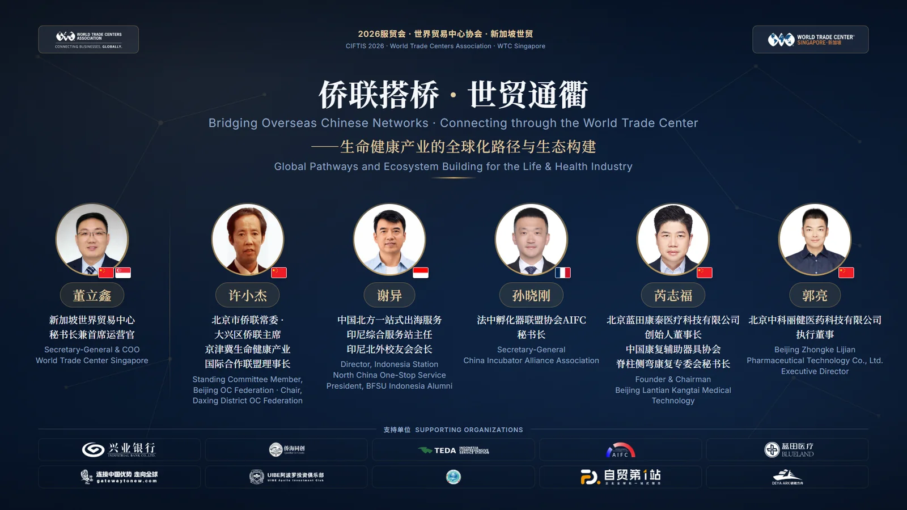
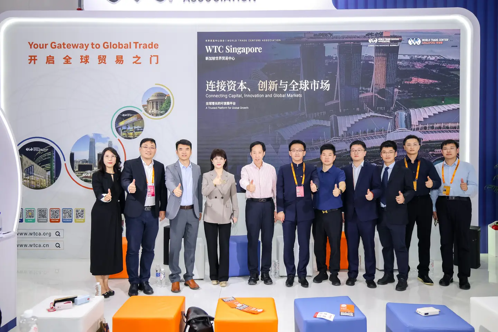
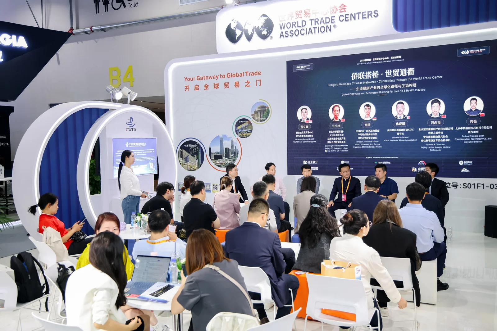
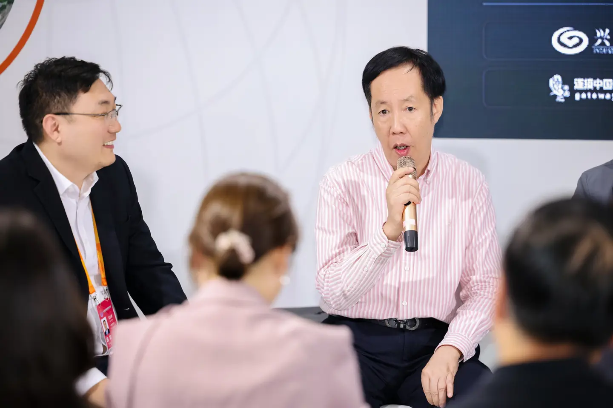
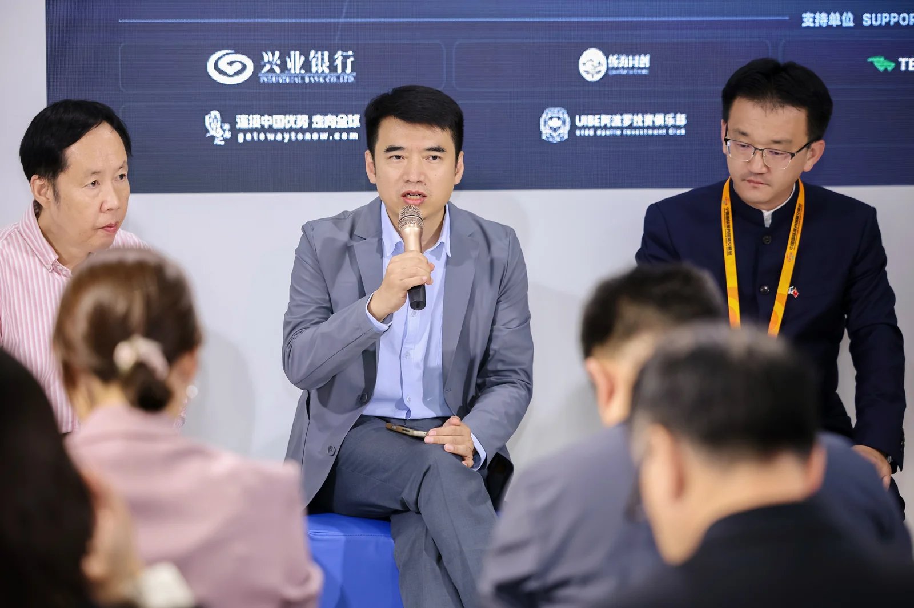
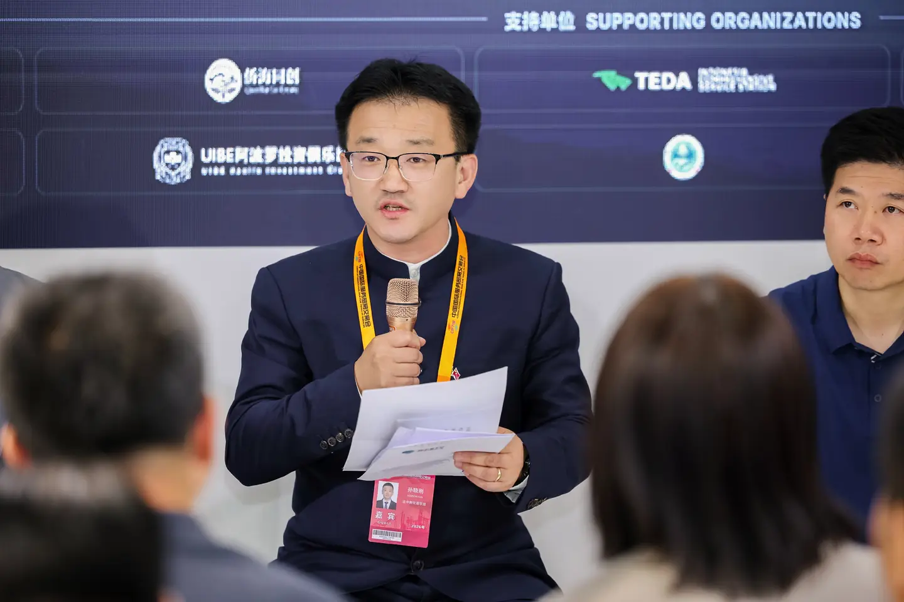
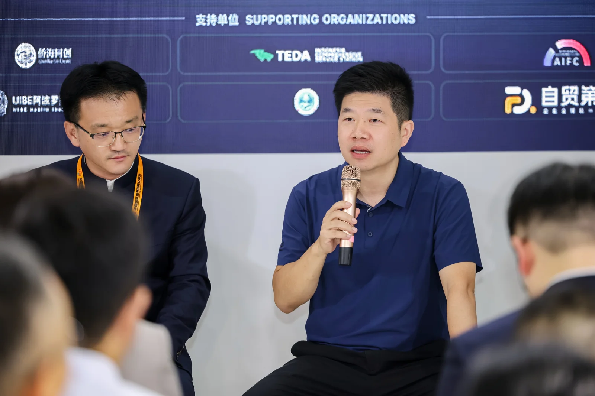
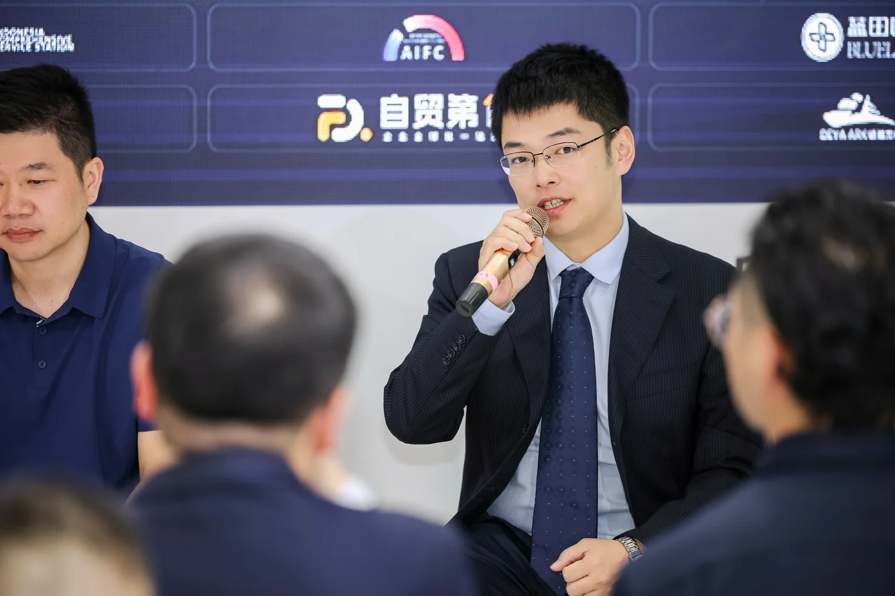
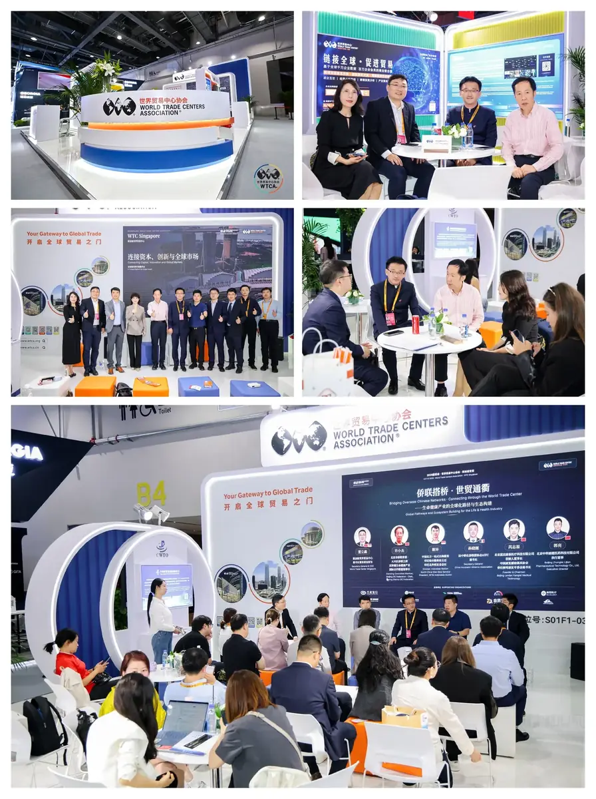

Beijing, 11 September 2026 — During the 2026 China International Fair for Trade in Services (CIFTIS), Bruce Dong (Dong Lixin), Secretary-General and COO of World Trade Center Singapore (WTCA Singapore), hosted a roundtable at the WTCA's dedicated pavilion in the Shougang Park exhibition hall. Titled "Bridging Trust, Building Pathways — Global Pathways and Ecosystem Building for the Life & Health Industry," the session brought together five guests from the overseas Chinese federation network, overseas service channels, and industry and tech-innovation fronts to discuss the real threshold of "getting in" for health-industry globalization.

CIFTIS is co-hosted by the Beijing Municipal People's Government and the Ministry of Commerce of China as a major international platform for trade in services. The World Trade Centers Association (WTCA) is one of the fair's official international cooperation organizations, alongside the World Intellectual Property Organization (WIPO), the International Trade Centre (ITC), the World Trade Point Federation (WTPF) and the Global Alliance for Trade in Services (GATIS). Since 2016, WTCA has partnered with CIFTIS through a dedicated pavilion, themed forums and B2B matchmaking, leveraging its network of city members across nearly 100 countries and territories to extend the fair's global reach and industry connections.


The Core Thesis: Going Out Is Not the Same as Getting In
In his opening, Bruce Dong noted that Chinese companies have long treated globalization as replicating a proven domestic model overseas — but that logic is being rewritten. "AI is no longer just an efficiency tool for exporters; it is reshaping how companies choose markets, allocate capital and build local teams," he said. His sharper point: "Whoever puts AI to work at the decision layer — not just the execution layer — will move faster from this Southeast Asia hub." He argued that Southeast Asia has become the preferred first stop precisely because it converges AI adoption, capital allocation and industry opportunity.
"For health-industry globalization, the product is only a ticket to the game; the real challenge is market entry. Product strength is merely the starting line of internationalization. To truly enter an unfamiliar country's health system, a company must clear three gates — regulatory access, market trust and patient capital. The overseas Chinese federation provides trust, the WTCA network provides channels, and capital markets provide patience. None of the three can be missing."
— Bruce Dong, Secretary-General & COO, WTCA SingaporeThe Overseas Chinese Federation: Turning Trust into Actionable Connections
Xu Xiaojie — Standing Committee member of the Beijing Overseas Chinese Federation, Chairman of the Daxing District Overseas Chinese Federation, and Chairman of the Beijing-Tianjin-Hebei Life & Health Industry International Cooperation Alliance — explained that the alliance leverages the federation's connective advantage to integrate overseas Chinese resources with domestic health-industry capacity, building an integrated support system for policy alignment, resource matchmaking and project implementation. It has already linked more than 80 overseas service stations and pooled over a hundred overseas Chinese business and talent leaders. By deepening strategic synergy with the WTCA, the alliance connects resources, channels and platforms into a single chain — empowering quality health-industry players to join the global division of labor. Next, it will focus on the toughest pain points — local compliance and market access — to help more projects actually land.

Overseas Channels: Ground-Level Views from Indonesia and Europe
Xie Yi, Director of the Indonesia Integrated Service Station under the China North (TEDA) One-Stop Overseas Service Base and a long-time Indonesia-market veteran, noted that many Chinese companies' first reaction to Southeast Asia is "huge market" — but the hard part is rarely in spotting the market; it is in actually entering it. Complex market-access procedures, long local registration cycles and fragmented channel resources are the most common hurdles. He stressed that spotting an opportunity is not the same as landing one: the real barrier is whether a company can put in place the on-the-ground machinery — compliance, localization, channels and partners — that turns opportunity into presence.

Sun Xiaogang, Secretary-General of the France-China Innovation Federation (AIFC), offered the European perspective: the scarcest resource in China-Europe cooperation is not capital but trust. He argued that overseas Chinese communities play multiple roles — interpreter of rules, gatekeeper of risk and endorser of credibility — helping companies clear compliance thresholds and the trust gap, making them an indispensable resource for entering the European market.

Industry Practice: A Good Product Is Only a Ticket
Rui Zhifu, Founder and Chairman of Beijing Lantian Kangtai Medical Technology, a spine-rehabilitation company, confirmed this from the front line: strong product competitiveness does not equal easy entry into overseas markets. Lantian Kangtai focuses on intelligent, digitalized, full-cycle spine-health solutions. He noted that, unlike consumer electronics or industrial goods, the specificity of medical-device export lies in local registration and trust-building as the true "passport." He hopes the federation, the industry alliance and the WTCA platform will combine forces to help more rehabilitation-medical enterprises resolve registration and trust challenges abroad.

Guo Liang, Executive Director of Beijing Zhongke Lijian Pharmaceutical Technology, shared the real challenges of taking original hard-tech global from a science-industry integration viewpoint. Zhongke Lijian's self-developed flexible ultrasound transdermal device holds multiple Chinese patents and has been published in leading international journals such as ACS Nano. Guo Liang said that for such original technology to go global, the decisive variable is often not the technology itself but access, trust and channels — no matter how advanced the science, it still must clear the same thresholds as any other health product.

The Wrap-Up: The Harder Part Is No Longer "Going Out" but "Getting In"
In his closing, Bruce Dong noted that in just thirty minutes, whether from the federation system, the industry alliance, overseas front-line observations or the two industry practitioners, every thread pointed to the same truth: "For companies going global, the real difficulty is increasingly not 'going out' but 'getting in' — especially in health. A product can be exported, but for a company to truly enter another country's health system, it must understand the rules, build trust, find local partners, and allow enough time for that process." He said WTCA Singapore and the global WTCA network will focus not merely on telling companies "where the market is," but on helping them find, when entering an unfamiliar market, "who understands the rules, who is trustworthy, and who can get things done together." Trust, channels and patient capital are exactly the three things WTCA Singapore will keep investing in.
"For companies going global, the real difficulty is increasingly not 'going out' but 'getting in.' Especially in health, a product can be exported, but to truly enter another country's health system, a company must understand the rules, build trust, find local partners, and allow enough time for that process."
— Bruce Dong, Secretary-General & COO, WTCA Singapore
Reportedly, during this CIFTIS, the WTCA pavilion will also host a second roundtable, "Southeast Asia as the Hub — AI and Going Global Driving Enterprise Growth," exploring Chinese enterprise globalization through technology, capital and talent. Amid a deeply adjusting global economy and intensifying stock competition, WTCA Singapore will continue its mandate of "connecting capital, innovation and global markets," leveraging the WTCA global network to create broader space for Chinese companies to "bring in" and "go out."

About the World Trade Centers Association
The World Trade Centers Association (WTCA), founded in 1970, is a non-profit, non-political organization dedicated to establishing and operating World Trade Centers worldwide to promote regional economic development and international trade and investment. Headquartered in New York, its global network spans nearly 100 countries and territories with over 300 World Trade Centers, serving thousands of member companies and clients by helping them source, find customers and improve financing and investment access.
About World Trade Center Singapore (WTC Singapore)
World Trade Center Singapore is the WTCA's officially authorized member in Singapore. Through three business pillars — WTC ONE Club, GlobalX and WTC Fund — it connects global capital, innovation resources and market opportunities, providing enterprises with cross-border matchmaking and globalization support.